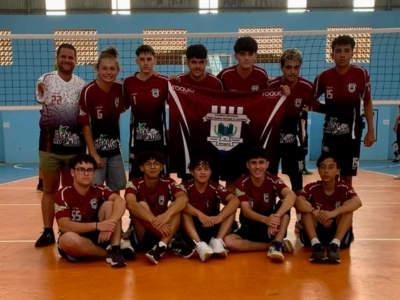
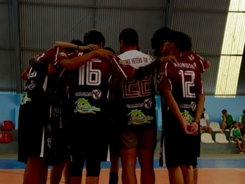
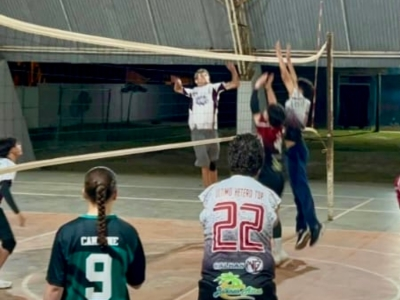
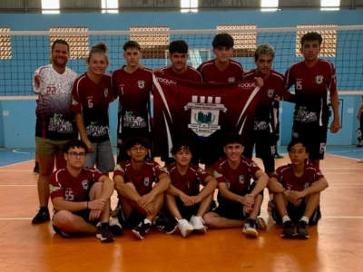
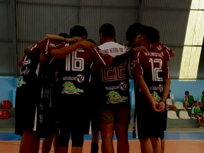
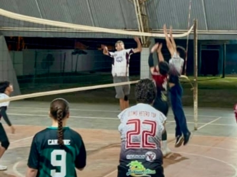

Atividades Extracurriculares
Conheça os programas, projetos e atividades extracurriculares que enriquecem a jornada educacional de nossos alunos, promovendo o desenvolvimento de novas habilidades, a cidadania e o protagonismo estudantil em diversas áreas do conhecimento.
Grêmio Estudantil e a Associação de Pais, Mestres e Funcionários
A comunidade escolar se organiza através de duas frentes principais. O Grêmio Estudantil atua como a voz dos alunos, representando seus interesses e promovendo atividades que enriquecem a vida na escola e desenvolvem a liderança. Em paralelo, a Associação de Pais, Mestres e Funcionários (APMF) une a família e a equipe da instituição para apoiar projetos pedagógicos e arrecadar fundos, que são investidos em melhorias estruturais e materiais para todos.
Programa Ganhando o Mundo
O PGM é um programa do Governo do Estado do Paraná que oferece intercâmbio internacional para estudantes da rede pública de ensino. Nossos alunos se esforçam diariamente para participar do programa. E com nosso apoio, tivemos Anthony Novaski São classificado para 2024, Péricles Rodrigo Rossetti Donda dos Santos classificado para 2025, e Ana Beatriz da Veiga Rosa, Beatriz Souza Bueno e Julia Zanelatto Cardoso classificadas para 2026.
Programa Mais Aprendizagem
O PMA é um programa iniciado pela Secretária de Educação do Estado, que se trata de aulas no contraturno com foco nas disciplinas de Língua Portuguesa e Matemática. Esse programa visa ajudar os estudantes a recuperarem o aprendizado, superarem defasagens e se prepararem melhor para o futuro, não apenas para a vida acadêmica, mas também para o mercado de trabalho.
Robótica Paraná
O Robótica Paraná é um programa que leva a tecnologia, a inovação e a robótica para as escolas públicas. Com atividades e desafios práticos, o programa estimula nos alunos o pensamento computacional, a criatividade, a capacidade de resolver problemas e o trabalho em equipe. Aqui no Colégio Maria Helena, essas aulas são ofertadas aos alunos nos contraturnos, permitindo que todos tenham oportunidade de participar.
Através da Ciência
O Clube de Ciências Através da Ciência é um espaço para nossos alunos estudarem. Aqui, os alunos exploram o mundo por meio de experimentos práticos, projetos inovadores e debates científicos. É uma oportunidade única de aprofundar conhecimentos, desenvolver o pensamento crítico e se apaixonar ainda mais pela ciência.
Clube de Teatro
No Clube de Teatro, os alunos soltam a criatividade, desenvolvem a expressão corporal e a oratória. Por meio de jogos teatrais, improvisações e montagem de peças, os participantes trabalham em equipe, ganham autoconfiança e descobrem o prazer de se apresentar no palco.
Projeto de Vôlei
O Projeto de Vôlei promove a saúde, o trabalho em equipe e a disciplina através do esporte. Os treinos são focados no desenvolvimento das habilidades técnicas e táticas do vôlei, incentivando a cooperação, o respeito e a superação de desafios dentro e fora da quadra.
 




